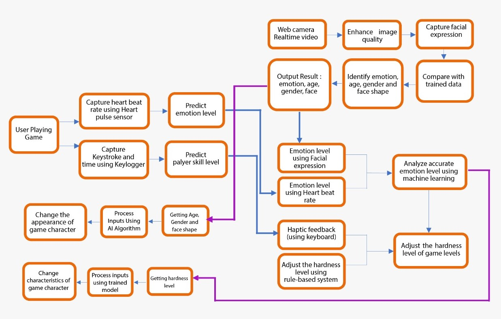

Literature Survey
There are around 2.2 billion gamers around the world. Out of the assessed 7.6 billion individuals living on earth, as of July 2018, that implies nearly 33% of individuals on this planet are gamers. Out of those 2.2 billion gamers, 1.2 billion of the players play PC games.
The gaming industry is the only one merchant that endeavors on via ducting the hole between technology and humans to crop up with a modernistic experience. The gaming industry has tried from time to time to prove and provide amusement, also aiding to polish motor skills, developing tactical opinion, and thus contributing to the comprehensive wellbeing of a player. As for the concern of gamers’ physical movement, the gaming world has grabbed it firmly with games that make a player use his motor skills in order to succeed at the respective level. For the emotional gamut, the gaming world has made some evolution with emotion-aware gaming which recognizes and interprets the player’s emotion in real-time.
Emotion recognition and viable contribution are nowadays well prestigious traits of intelligent gaming systems. Facial expression detection results in identifying and predicting the basic emotions of an individualsuch as anger, panic, sorrow, happiness, disgust, surprise and shock and predicting the emotional range of a particular player is going through as a percentage. This could be achievable by recording a video sequence of a player playing a game and analyzing its frames based on a pre-collected dataset. Meanwhile variables like age, gender and skills are also identified to provide a unique user experience.
Emotion recognition can not only be done through facial expression but also the heartbeat. The heart rate can change according to the change of users’ emotions. Analyzing th is resultin identifying and predicting the basic emotions of an individual like anger, panic, sorrow, happiness, disgust, surprise and shock and predicting the emotional range of a particular player is going through as a percentage.The most important for our gameis happy, angry and neutral.
To provide a unique experience to the user, the user’s abilities and expertise(skill level)as a gamer should be identified. Whether the player is a pro level gamer, an intermediate or a beginner. Obtain data from the haptic feedback of users and analyzing them to identify the players experience level would be more efficient.. Here the haptic feedback will be obtained through the keyboard key-logger. The key-logger will change from one player to another, in each player a variance in key pressing time and pattern could be observed.
When it comes to identifying emotions, the easiest way to capture the player’s facial expressions is capturing through a video sequence taken using the web camera. Most gamers play games through a laptop which has an inbuilt web camera or a personal computer with an external web camera. Even though it is an effective method to capture facial expressions most of the web cameras have low quality and low resolutions. Sometimes the players also tend to play games in low lighting which also affects the image quality. So that, before analyzing and identifying the emotions displayed by the player, the image frames should be enhanced using image processing enhancement techniques.
When solely depending on either emotion predicted from the facial expression or heart rate it might not give us a hundred percent accurate result. Therefore, we have to analyze the results taken from both heartbeat and facial expression to obtain an accurate result. For example: Even though the players facial expression looks angry he or she might not be feeling angry. We are doing this to identify how interactive the user is with the game. If the user is in angry mood or stressed, it is automatically checked if the player is stuck at alevel because it is too hard, So the game level will be made easy so the user can move forward and their stress level or anger will be reduced. Or if the user is bored because the game is too easy, where in this situation the game will be made hard and challenging. This is done to keep the user engaged with the game and also to improve user attraction. When adjusting the hardness level of the game, the emotions from facial expression and heartbeat along with the haptic feedback from keyboard, age and gender are used to identify what type of user he or she is, what their skills are.
Research Gap
When it comes to the past research studies, the research team could find several systems which are implemented for Adaptable Game. But there are a lot of systems that have been implemented to predict emotions using either facial expression or heartbeat which gives an output separately but does not give a percentage of the particular emotion. So,in our research we are developing a game that adapts and adjusts according to the emotional level by analyzing both emotional levels given from heartbeat and facial expression to make an accurate decision.So, using that final decision, the hardness of the game level will be changed based on the current situation of the player. And, the characteristics of the game character and abilities will be also adjusted accordingly at Real-time. Both these features are also affected by age, gender, face shapeand haptic feedback of the player. At this moment we couldn’t find a game that adapts and adjusts automatically by analyzing all the inputs at Real-time. But there are applications that can identify face shape and transfer it to the character so the characters can mimic our actions. And there are games that can capture your face and apply it to the character of the game, but it is not Real-time and it also takes a lot time.
There are numerous applications that recognize emotions using facial expressions. But there are no applications that give emotion as a percentagewhich is used for adjusting the game level4.
Haptic feedback is implemented by researches to check the player’s skills but we couldn’t find a game that has used haptic feedback to analyses the type of player and his or skills and then use that information to change the hardness level or adjust the character.
Research Problem
When talking about entertainment, what comes into our mind aregames. Gamescan be categorized in to two.
- Physical games
- Indoor games/sports
- Outdoor games/ sports
- Online games
- Mobile games
- Personal computer games
With the busy &tight schedules people refuseto engage in physicalgames most of the instancesdue to reasons such as.
- They have less time(They can pause an online gameand continue later on, but that cannot be done with most of the offline/physical games)
- It is hard to gather people (due to busyness) for outdoor games.
- Fear of injuries.
- Less physical stamina.
There we understood that online games could help people to overcome all these problems associated. The following figure shows how the online gaming industry grew up over the past few years. But the research team also noticed that people refuse to play online games due to the level of complexity of some of the levels. Ultimate goal should be to release the stress and boredom not to increase it.
Therefore, as a Solution a game is being designed that changes the level of hardness or the complexity of the particular level according to the players’ mood or emotionsautomatically. The next level will be auto designed/adjusted based on the previous level player record using an artificial intelligence algorithm.In order to achieve this, heartbeat, facial expressions willbe captured and analyzed toobtain the accurate emotion level of the player using machine learning. This emotion level is taken along with the age gender and haptic feedback to adjust the hardness level of the particular level.
Research Objectives
The main objective of this research is to provide a solution to our research problem which is user getting bored of the game because it is too boring or being unable to play a particular mission / being stuck. For this the following objectives have to be achieved.
- Analyze and identify emotion and level from facial expression.
- Identify emotionby using Convolutional Neural Network (CNN) and OpenCV
- Create algorithm for analyze emotion.
- Create algorithm for analyze emotion level.
- Identifying age and gender•UsingImage processing techniques.
- Using Convolutional Neural Network (CNN) and OpenCV
- Analyze the status of player.
- This done by using a key logger.
- Write an algorithm for predict the gamer skill level.
- Therelation between heart pulse rate and the emotion.
- Create an IOTmodel totake the pulse rate.
- Write an algorithm topredict the dataset.
- changing the player’s characteristics according to the player's skill level
- Create an AI algorithm for adjusting player abilities.
- Implement an AI program to identify player skill level.
- Implement a program for adjusting game hardness levels using the unity game engine.
- Customize the game character appearance according to the player automatically.
- Implement a system for change player appearance dynamically.
Methodology
To predict emotions, age,face shape and gender,we need to obtain the facial expression of the user through real-time video. Facial Expressions will be extracted from the frames of the real-time video. A perfect approach to obtain the emotionalstate we need to use Image Processing and Machine LearningAlgorithms.
The best approach to identifying emotions, age, face shape,and gender are using the OpenCV library. In neural networks, Convolutional neural network (ConvNetsor CNNs) is one of the main categories to do images recognition, images classifications. Objects detections, recognition faces etc., are some of the areas where CNNs are widely used. The identification is done by analyzing the frames of a live video that takes live input while the user is playing a game using the web camera.
Technologies

System Diagram

{kind=link}